MOVE / ATLAS UML · 01 / 17 · CLASSES
Núcleo acadêmico de classes
Cada estadia associa os três objetos identificados na entrada. O único losango indica as dez vagas criadas pelo próprio estacionamento.
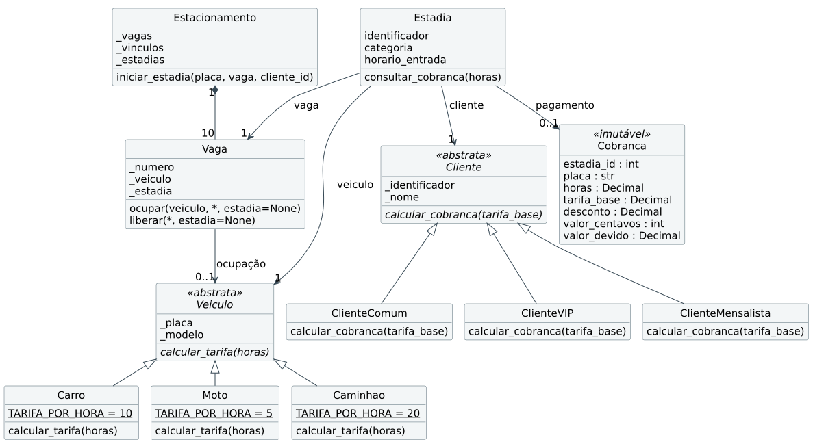
MOVE / ATLAS UML · 02 / 17 · CLASSES
Coordenação e reconstrução do domínio
O serviço monta um Controller por operação. O repositório conserva a versão lida para detectar alterações antes da escrita.
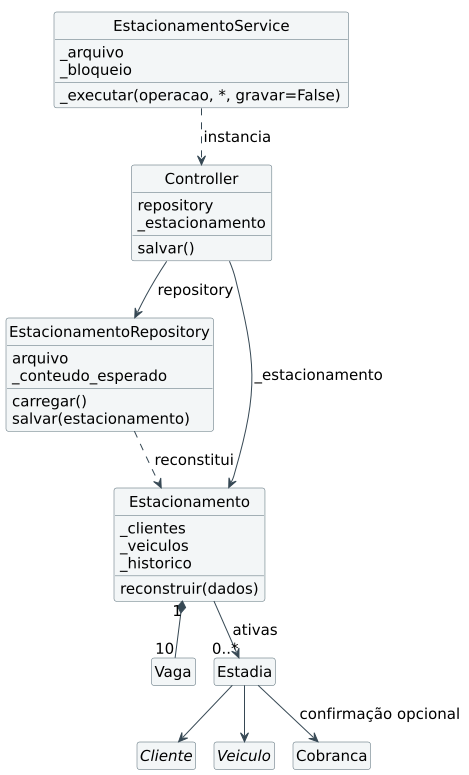
MOVE / ATLAS UML · 03 / 17 · CLASSES
Identidade e projeções da apresentação
As identidades principal e pessoal podem ser distintas. Os registros de gerações e revisões têm prazos e finalidades próprios. As projeções organizam dados de leitura.
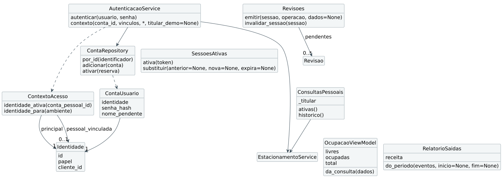
MOVE / ATLAS UML · 04 / 17 · CLASSES
Objetos de interação no navegador
Uma instância acompanha a aparência da página. Um objeto de submissão acompanha cada formulário marcado. Os ouvintes pertencem à apresentação.
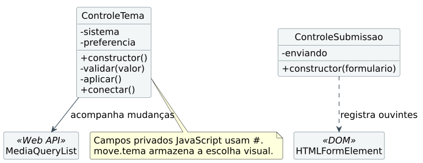
MOVE / ATLAS UML · 05 / 17 · COMPONENTES
Dependências dos componentes
Terminal e web compartilham o domínio. Os blueprints chamam serviços e adaptadores de apresentação. A restauração das entidades passa pelo Repository.
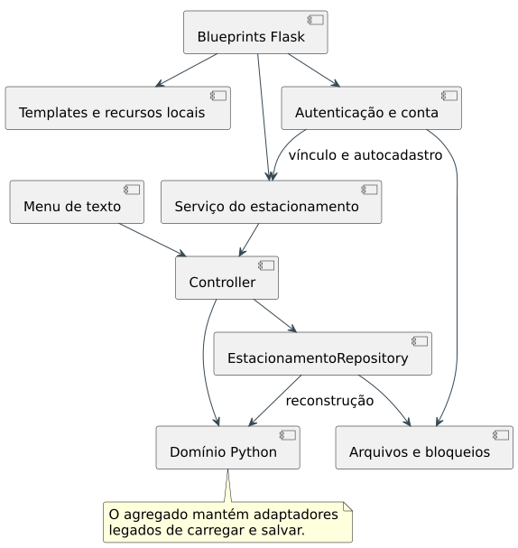
MOVE / ATLAS UML · 06 / 17 · CASOS DE USO
Objetivos dos participantes
Master Demo representa a identidade especial do cenário fictício. O servidor verifica qual contexto está ativo antes de autorizar cada ação.
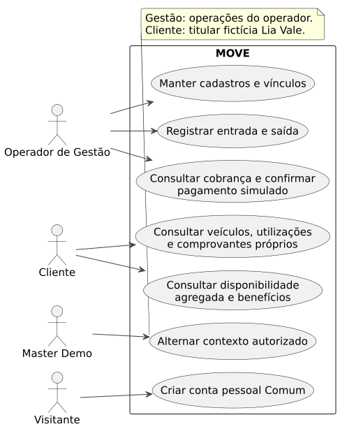
MOVE / ATLAS UML · 07 / 17 · SEQUÊNCIA
Cadastro administrativo de cliente e veículo
São dois comandos independentes. Cada confirmação bem-sucedida publica seu evento e retorna dados de apresentação.
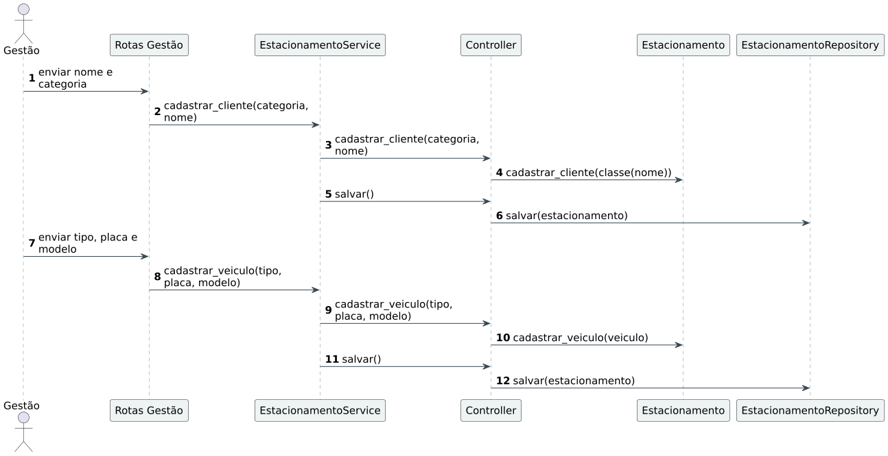
MOVE / ATLAS UML · 08 / 17 · SEQUÊNCIA
Vinculação de um veículo
O agregado verifica o cadastro, a ocupação e a ausência de vínculo anterior. Uma recusa impede a publicação.
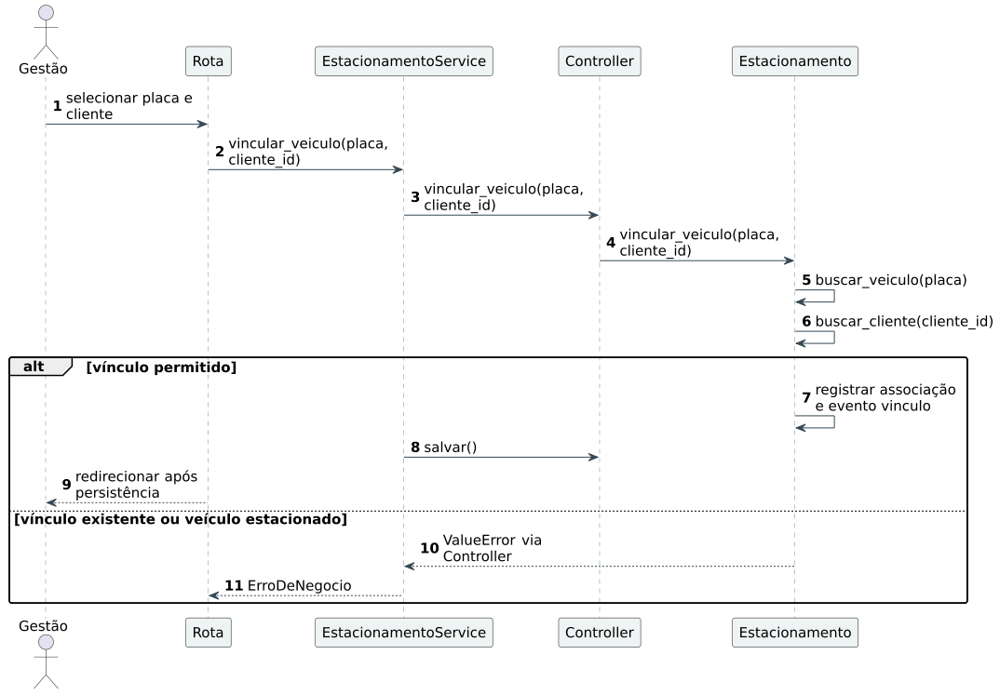
MOVE / ATLAS UML · 09 / 17 · SEQUÊNCIA
Registro de entrada vinculada
O identificador provém da posição da entrada no histórico. Conferir a vaga no formulário não a reserva.
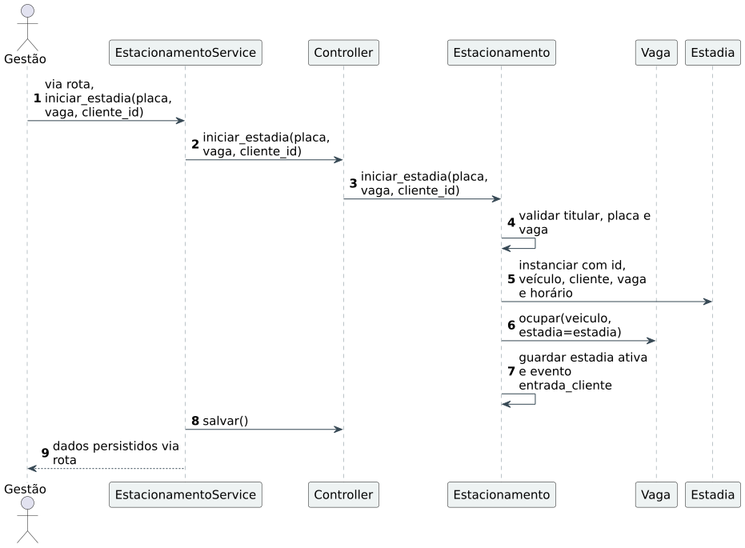
MOVE / ATLAS UML · 10 / 17 · SEQUÊNCIA
Cálculo polimórfico da cobrança
As mensagens ao veículo e ao cliente são despachadas para os tipos concretos. Consultar a cobrança mantém a ocupação.
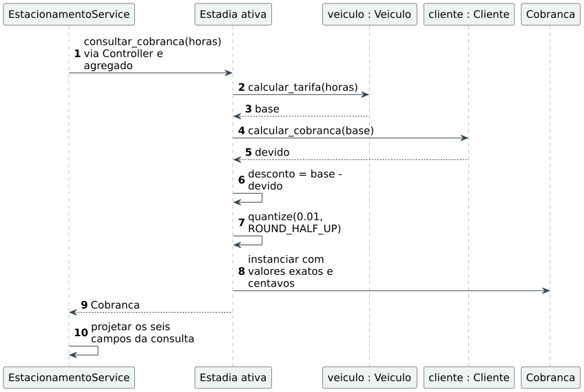
MOVE / ATLAS UML · 11 / 17 · SEQUÊNCIA
Confirmação de pagamento simulado
A rota consome a revisão. O serviço recota e compara a expectativa antes de emitir o evento de pagamento.
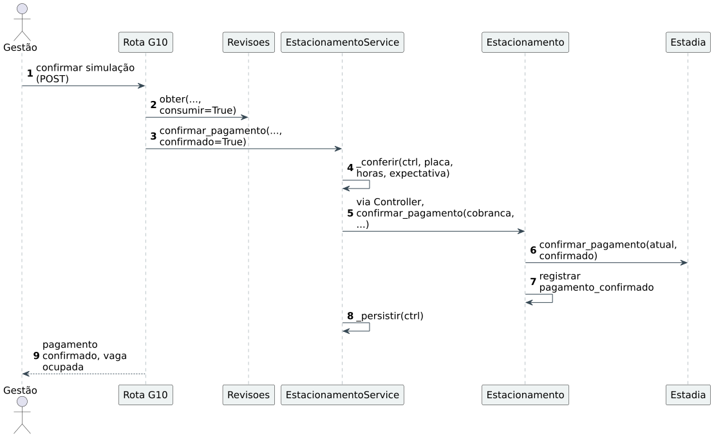
MOVE / ATLAS UML · 12 / 17 · SEQUÊNCIA
Conclusão da saída
A conclusão valida o estado financeiro antes de liberar a vaga. A resposta persistida fica consultável pelo ID de entrada.
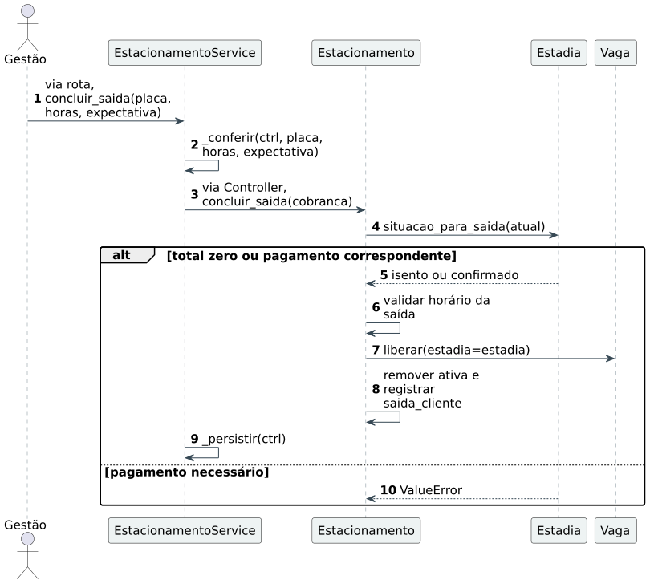
MOVE / ATLAS UML · 13 / 17 · SEQUÊNCIA
Reconstrução do histórico
A ordem física dos registros participa da identidade das estadias. O agregado só é disponibilizado após a validação.
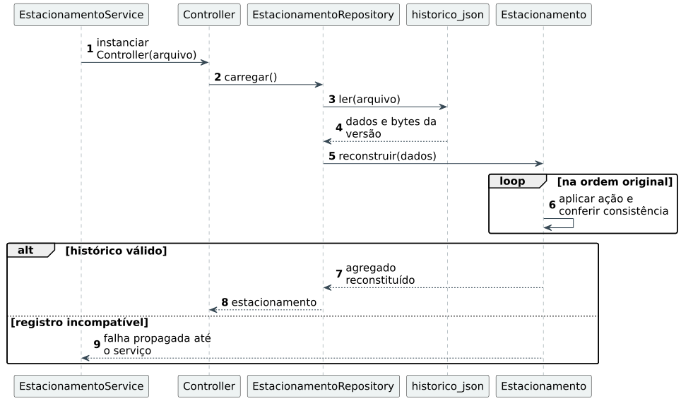
MOVE / ATLAS UML · 14 / 17 · SEQUÊNCIA
Autocadastro e recuperação
A reserva fixa a identidade. Um login válido pode concluir o cadastramento pendente utilizando o mesmo UUID.
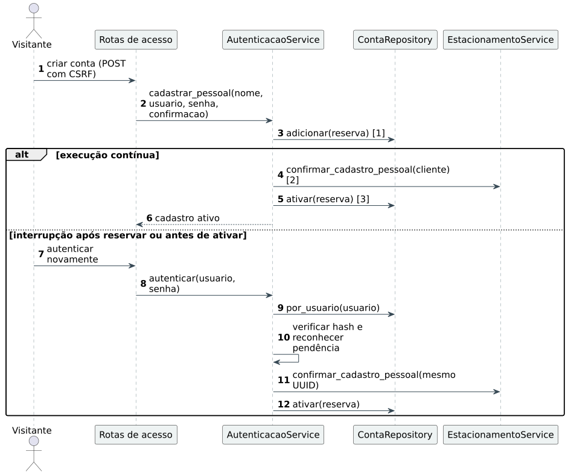
MOVE / ATLAS UML · 15 / 17 · SEQUÊNCIA
Alternância entre os portais
A seleção depende da identidade autorizada. A troca de geração impede que uma revisão antiga autorize um novo envio.
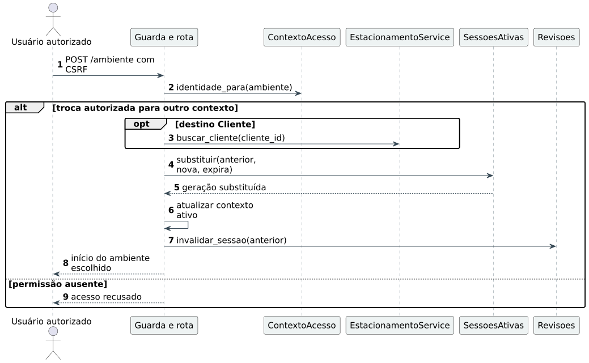
MOVE / ATLAS UML · 16 / 17 · ESTADOS
Ciclo de uma estadia vinculada
As setas de consulta são leituras. Os estados concluídos podem ser projetados do histórico depois que a estadia sai do índice de ativas.
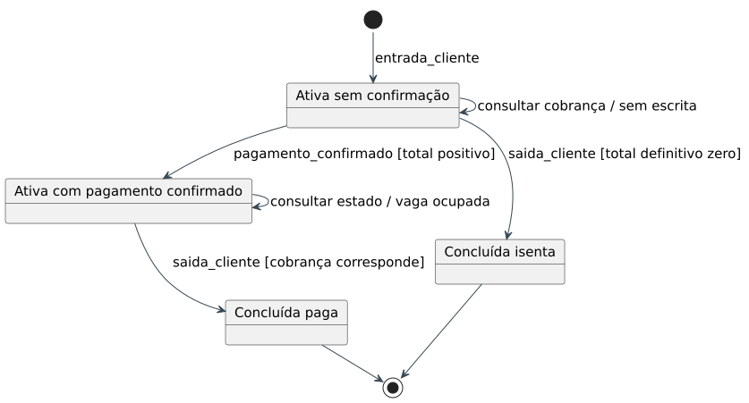
MOVE / ATLAS UML · 17 / 17 · IMPLANTAÇÃO
Implantação local
Os pontos de entrada compartilham uma base Python. O terminal e o servidor obtêm acesso exclusivo ao mesmo histórico em momentos distintos.
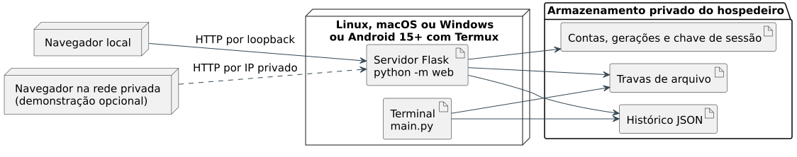